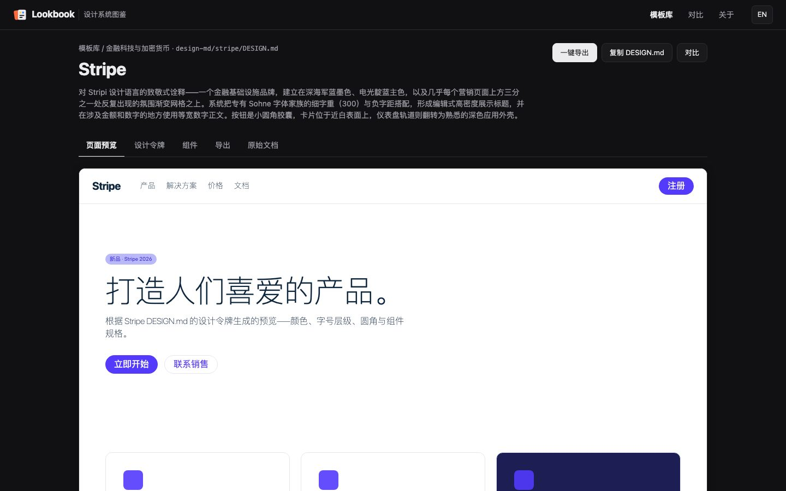
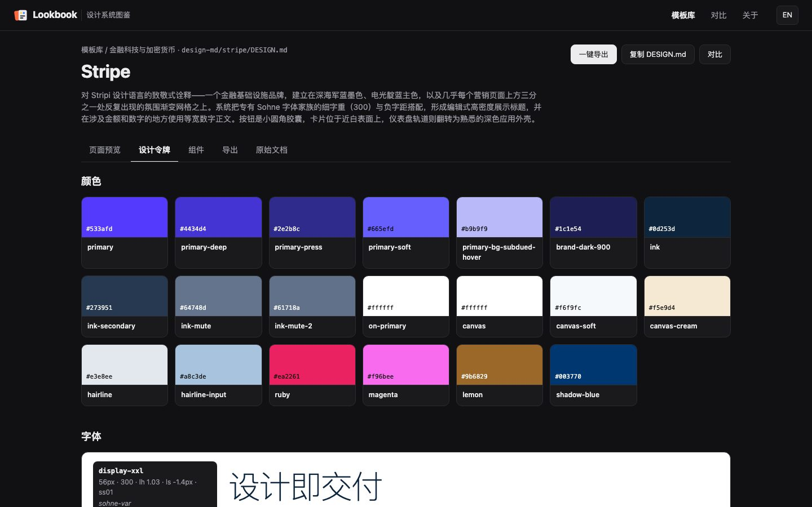
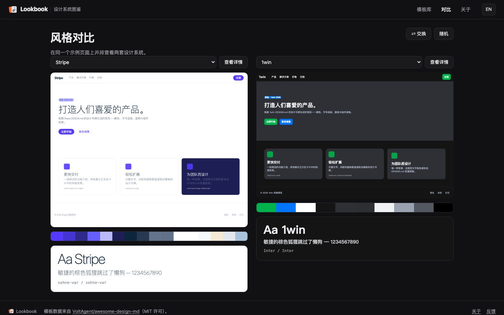
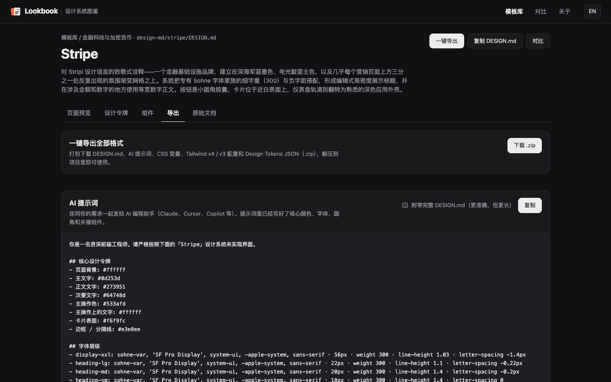

网站 / 工具
Lookbook
设计系统图鉴
把 80 余套知名产品的设计系统渲染成可以直接看、直接比、直接拿走的页面。
已上线 已上线，可以直接访问。
80+套设计系统
10个类别
2种界面语言
这是什么
每套设计系统都写在一份 DESIGN.md 里，包括颜色、字体、圆角、间距和组件。Lookbook 用这些设计令牌渲染出同一个示例页面，所以不用读文档，就能看出 Stripe、Linear、Notion 这些设计系统用起来是什么样子。
解决什么问题
设计系统通常只是一份文档：颜色、字体、圆角、组件都写在字里行间，很难一眼看出用起来是什么样子，更难在几套之间比较。Lookbook 把这些规范直接渲染成页面，再整理成可以复制进项目的格式。
你能看到什么

浏览
按类别分组，可中英文搜索，按深色或浅色筛选。
模板库：每张卡片带有品牌色板与一句话简介。
预览
每套模板渲染成完整的示例落地页，包括导航、首屏、按钮、卡片和页脚。
以 Stripe 为例：用它的设计令牌渲染的示例页面。
拆解
色板、字号层级、圆角与间距、组件定义，色值可点击复制。
以 Stripe 为例：设计令牌里的全部颜色。
对比
把两套设计系统放在同一个页面上并排比较，可以互换左右，也可以随机抽取。
Stripe 与 1win 并排：同一页面，不同的设计系统。
导出
AI 提示词、CSS 变量、Tailwind 配置等多种格式，一键打包下载。
以 Stripe 为例：导出页与已写好的 AI 提示词。可以在哪里使用
- 交给 Claude、Cursor、v0 等 AI 编码助手，让它们按选定的风格写界面
- 把 CSS 变量或 Tailwind 配置放进自己的项目
- 导入 Figma 的 Tokens Studio（W3C Design Tokens JSON）
- 把 DESIGN.md 放在项目根目录，让 AI 编码助手随时参考
关键设计与技术
- 数据
- 每套设计系统是一份 DESIGN.md；分类和简介集中写在 CATALOG.md，卡片与筛选都从这里读取。
- 渲染
- 用设计令牌渲染同一个示例落地页，不同系统之间才有可比性。
- 前端
- Vite 加原生 JavaScript，输出静态站点。
- 导出
- 在浏览器里把各种格式打包成 .zip，不需要后端。
- 质量
- 自动测试覆盖数据解析、全部页面渲染、导出格式和文字对比度；推送到 main 后由 GitHub Actions 部署。